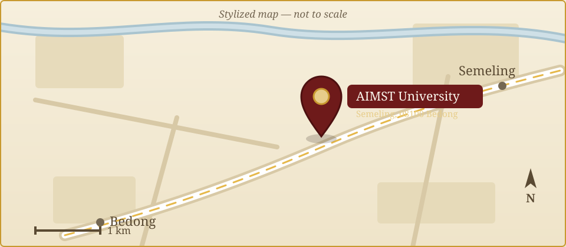

Our Mission
To create an enriching academic and cultural environment through research, education, and global collaborations.
AIMST University · Heritage & Wellness Research
Preserving Classical Wisdom & Integrative Healthcare
Overview
The Centre for Indian Culture and Tamil Civilization (ICTC) at AIMST University serves as a centre of excellence dedicated to promoting the rich traditions, knowledge systems, and values of Indian culture and Tamil civilization.
Under the leadership of Professor Dr. M. Rajantheran, the Director of the Centre, ICTC focuses not only on cultural preservation and academic research but also encourages entrepreneurship and innovation inspired by traditional wisdom.
The Centre organizes seminars, workshops, and cultural programs that foster creativity, leadership, and enterprise among students. By blending cultural heritage with modern entrepreneurial skills, ICTC aims to nurture socially responsible individuals who contribute to both cultural sustainability and economic growth.
What drives us
To create an enriching academic and cultural environment through research, education, and global collaborations.
To be a leading institution preserving, promoting, and advancing Tamil Studies and Indian Civilization.
Leadership
What we do
Hybrid mode, three to six months. Open to candidates with SPM (minimum one credit), delivered in Tamil and English. Curriculum references the Yoga Sutra and Thirumanthiram, with practical evaluations, MCQ exams, and presentations.
Held 22–23 November 2025, organized by ICTC with Almaa Herbals (Chennai) as main sponsor and inaugurated by YB Datuk Seri M. Saravanan, Pro-Chancellor. Featured 203 abstracts and delegates from 31 institutions across nine countries.
A significant milestone in promoting traditional Tamil medical wisdom on a global stage, in collaboration with Almaa Herbals (Chennai) and the Siddha Science Research Malaysia Academy.
Organized 11 December 2025 to acknowledge the organizing committee, subcommittee members, staff, and cleaning personnel for their valuable contributions during AICSM 2025.
Held 2 October 2025 with the Indian Culture Society, celebrating the triumph of knowledge and righteousness over ignorance through traditional rituals, lamp lighting, classical music, and dance.
Get in touch
AIMST Centre for Indian Culture & Tamil Civilization,
AIMST University, Batu 3 1/2, Bukit Air Nasi,
Jalan Bedong–Semeling, 08100 Bedong, Kedah, Malaysia.
Prof. Dr. M. Rajantheran:
rajantheran@aimst.edu.my
Mr. K. Jayachandran:
jayachandran@aimst.edu.my
Office: +60 429 8000 (Ext. 8123)
Prof. Rajantheran: +6016 354 7780
Mr. Jayachandran: +6012 672 7556
Monday – Friday
8:00 AM – 5:00 PM

Open in Google Maps ↗